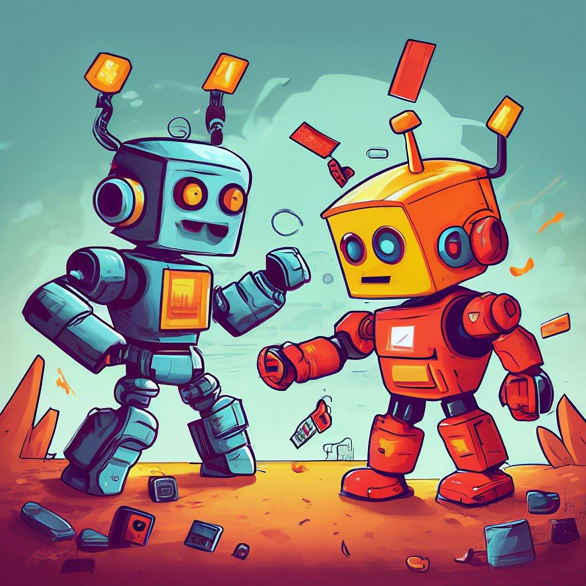

Страница 7
CL-USER> (sb-ext:search-roots (loop repeat 3 collect...
posted on 2025-01-18
CL-USER> (sb-ext:search-roots (loop repeat 3 collect (get-random-dynamic-object))
:print :verbose)
Path to "MODILETTERDA":
6 70031144DF [ 2] SB-IMPL::*ALL-PACKAGES*
5 700518C41F [ 146] a (COMMON-LISP:SIMPLE-VECTOR 513)
5 7005281513 [ 8] #<PACKAGE "CL-UNICODE">
5 70053D8533 [ 2] a SB-IMPL::SYMBOL-TABLE
5 70054FB6F7 [ 1] a cons = (# . #)
5 70056F16EF [ 34] a (COMMON-LISP:SIMPLE-VECTOR 307)
5 7005919B9F [ 2] CL-UNICODE::*NAMES-TO-CODE-POINTS*
5 7005B1CBC3 [ 6] #<HASH-TABLE :TEST EQUALP :COUNT 33698 {7005B1CBC3}>
5 700D21000F [38446] a (COMMON-LISP:SIMPLE-VECTOR 83559)
; No values
;; Попробуем проверить действительно ли такой ключ есть в словаре:
CL-USER> (gethash "MODILETTERDA" CL-UNICODE::*NAMES-TO-CODE-POINTS*)
71199
Это лишь пример. Но по объектам созданным в результате бенчмарка, search-roots ничего не выдавал, что говорило о том, что эти объекты "висят в воздухе" и GC вполне мог бы их удалить.
Matrix Badger для GitHub
posted on 2024-04-05
Сегодня расскажу ещё про один мой проект, который так и не превратился в продукт. Правда в отличие от 12forks.com, этот проект жив до сих пор. Проект связан с GitHub и полезен тем, кто развивает фреймворк или библиотеку, предназначенную для разных платформ, языков программирования или операционных систем.
Сегодня расскажу ещё про один мой проект, который так и не превратился...
posted on 2024-04-05

Сегодня расскажу ещё про один мой проект, который так и не превратился в продукт. Правда в отличие от 12forks.com, этот проект жив до сих пор. Проект связан с GitHub и полезен тем, кто развивает фреймворк или библиотеку, предназначенную для разных платформ, языков программирования или операционных систем.
Помощник для Opensource разработчиков
posted on 2024-03-21
Сегодня хочу рассказать про один из своих прошлых проектов. Когда-то у меня появилась идея, как упростить себе обработку большого числа пулл-реквестов и issue в своих opensource проектах. И тогда я сделал сайт 12forks.com (сейчас уже недоступен, как выглядела главная страница можно глянуть через WebArchive).
Помощник по работе с opensource проектами
posted on 2024-03-21

Сегодня хочу рассказать про один из своих прошлых проектов. Когда-то у меня появилась идея, как упростить себе обработку большого числа пулл-реквестов и issue в своих opensource проектах. И тогда я сделал сайт 12forks.com (сейчас уже недоступен, как выглядела главная страница можно глянуть через WebArchive).
Результаты хакатона ЛЦТ 2023
posted on 2024-03-09
В последнем видео на YouTube канале я рассказываю о проекте HrZero, который мы с одним товарищем делали на хакатоне Лидеры Цифровой Трансформации осенью 2023. Задача была создать сервис онбординга сотрудников, но мы, как всегда постарались сделать больше, чем от нас требовалось. В результате, в нашем сервисе онбординга появилась мини-игра, позволяющая новому сотруднику запомнить своих коллег. Эта идея нам так понравилась, что решили сделать из неё отдельный проект. Так появился https://mememo.ru.
В последнем видео (https://www
posted on 2024-03-09
В последнем видео (https://www.youtube.com/watch?v=Zpn86AQRVN8)) на YouTube канале я рассказываю о проекте HrZero, который мы с одним товарищем делали на хакатоне Лидеры Цифровой Трансформации осенью 2023. Задача была создать сервис онбординга сотрудников, но мы, как всегда постарались сделать больше, чем от нас требовалось. В результате, в нашем сервисе онбординга появилась мини-игра, позволяющая новому сотруднику запомнить своих коллег. Эта идея нам так понравилась, что решили сделать из неё отдельный проект. Так появился https://mememo.ru.
Привет, друзья!
posted on 2024-03-05

Привет, друзья! Сегодня я хочу поделиться с вами интересной идеей, которая пришла мне в голову недавно. Я сейчас вникаю в то, как продвигать свои проекты, а через них и Common Lisp. Ну, знаете, SEO там всякий, маркетинг. И вот что я придумал!
Сайт со сказками
posted on 2024-02-26
Продолжая тему моих неудачных проектов, хочу рассказать ещё об одном сайте – Skazorama.ru.
Идея этого проекта была в том, чтобы сделать бесконечную ленту сказок, которые можно почитать детям. При чём, открывая сайт на телефоне, родитель видел новые сказки, которые ещё не читал своему ребёнку. Если сказка не понравилась, то её можно было просто промотать, и вслед за ней подгружалась следующая. При этом сервис воспринимал такую промотку как "dislike" и в будущем я рассчитывал прикрутить ML, чтобы рекомендовать именно те сказки, которые с большей вероятностью понравятся ребёнку.
Продолжая тему моих неудачных проектов, хочу рассказать ещё об одном...
posted on 2024-02-25
Продолжая тему моих неудачных проектов, хочу рассказать ещё об одном сайте – Skazorama.ru.
Created with passion by 40Ants